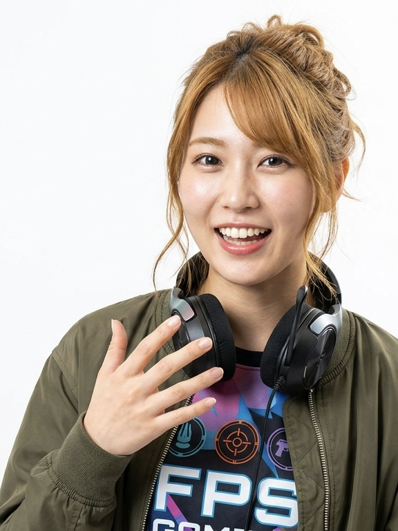
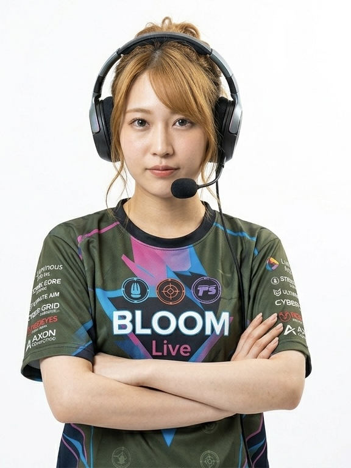

hojo-mari-hero.png
LIVER — BLOOM LIVE
FPSはガチで、トークはマシンガン。
関西から来た、新世代ストリーマー。
関西から来た、新世代ストリーマー。
HOJO
MARI
北 條 ま り
LIVE STREAMING WEEKLY
10,000+ VIEWERS

| NAME | 北條 まり / Hojo Mari |
|---|---|
| BIRTHDAY | 2004年3月3日(22歳) |
| HEIGHT | 156cm |
| BIRTHPLACE | 大阪府 |
| HOBBY | FPS・アクションゲーム、たこ焼き屋巡り、お笑いライブ鑑賞 |
| SKILL | FPSエイム精度(プロ並み)、関西弁マシンガントーク、長時間配信耐久力 |
| DIVISION | ライバー部門 / BLOOM Live |
| GENRE | FPS・アクションゲーム実況、関西弁マシンガントーク雑談 |
| PLATFORM | BLOOM Live 公式チャンネル(週4〜5回配信) |
大阪の下町で、ゲーム好きな兄2人の背中を見て育つ。小学生の頃に初めて触れたFPSゲームで才能の片鱗を見せ、高校・大学時代には地元のeスポーツカフェの常連として、数々のアマチュア大会に出場。大学在学中から「プロゲーマー顔負けのガチプレイをしながら、一秒も口が止まらない女子大生がいる」と口コミで話題になり、個人でのゲーム実況活動を開始。コアなゲーマー層から絶大な支持を集める。2024年、ライバー部門を新設した「株式会社ルミナス・アーツ」のオーディションに合格し、専属ライバーとして加入。「ガチプレイ」と「天才的なトーク」が同居する唯一無二のストリーマーとして、業界の注目を一身に集めている。
プロゲーマー顔負けのエイム精度と判断力で、初見プレイから上級者向けタイトルまで自在に攻略。視聴者参加型のランクマッチ配信は毎週瞬殺で枠が埋まる人気企画。
生粋の関西人ならではのリアクション、ボケ・ツッコミの速度、一秒も口が止まらないテンポ感。深夜の長時間雑談配信は「聴くだけで元気が出る」と通勤通学のお供として愛されている。



「 勝 ち た い 気 持 ち も 、笑 い も 、
全 部 ホ ン マ や ね ん 。 」
お 仕 事 の ご 依 頼 は こ ち ら
CONTACT FOR BOOKING